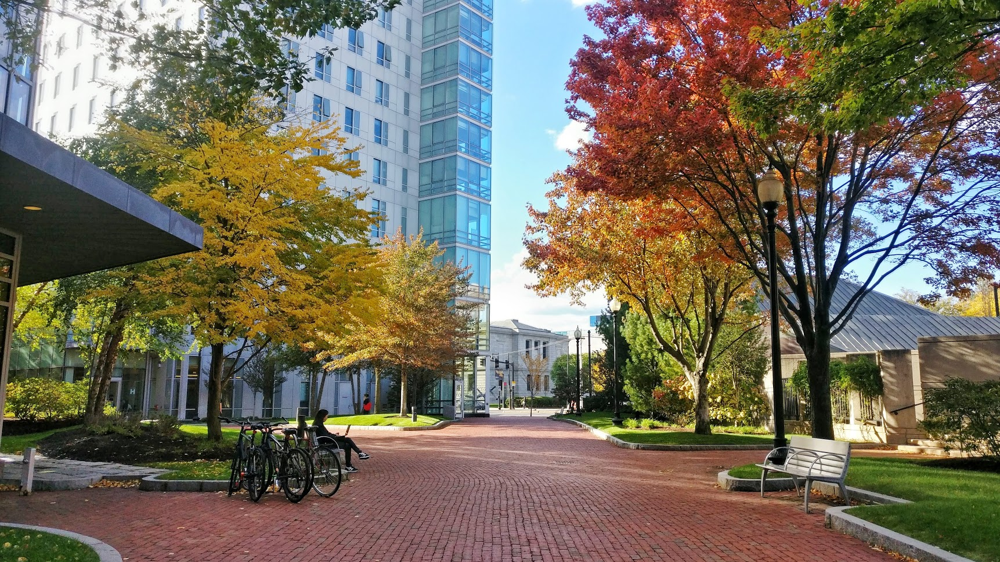
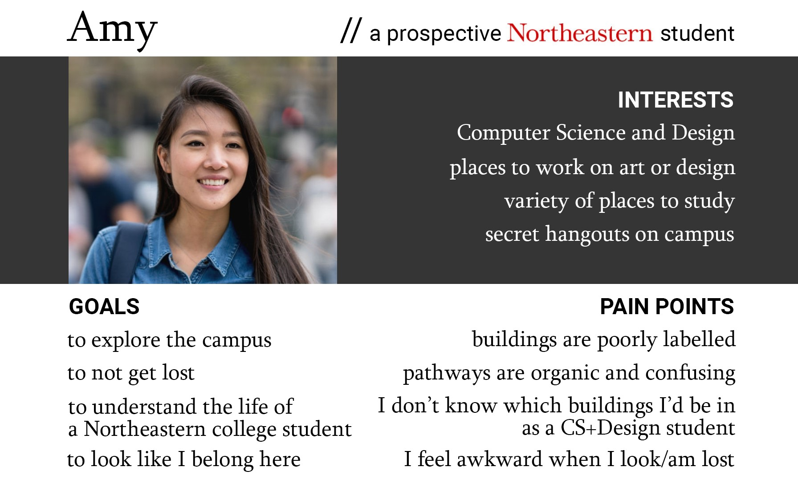
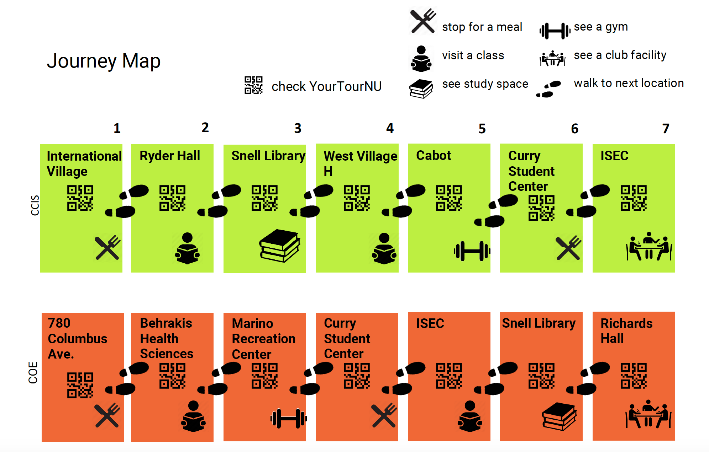
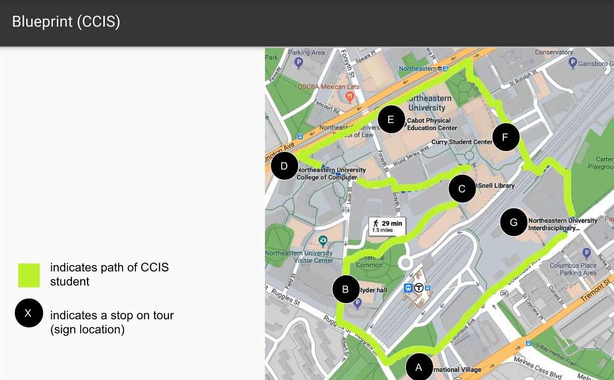
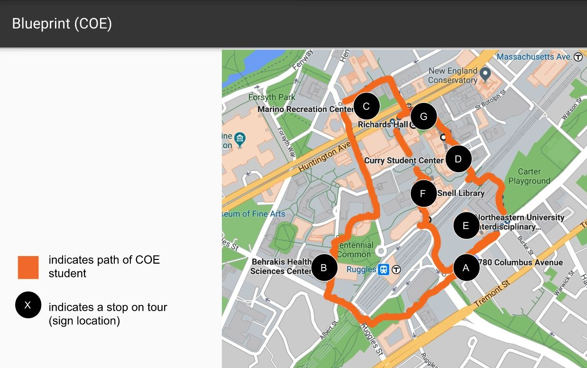
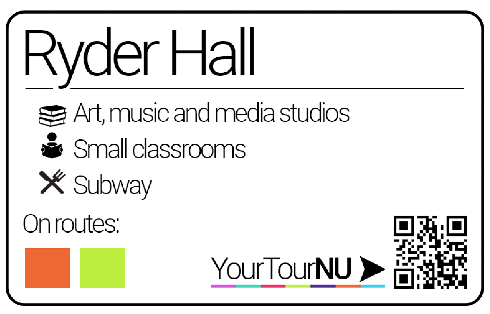
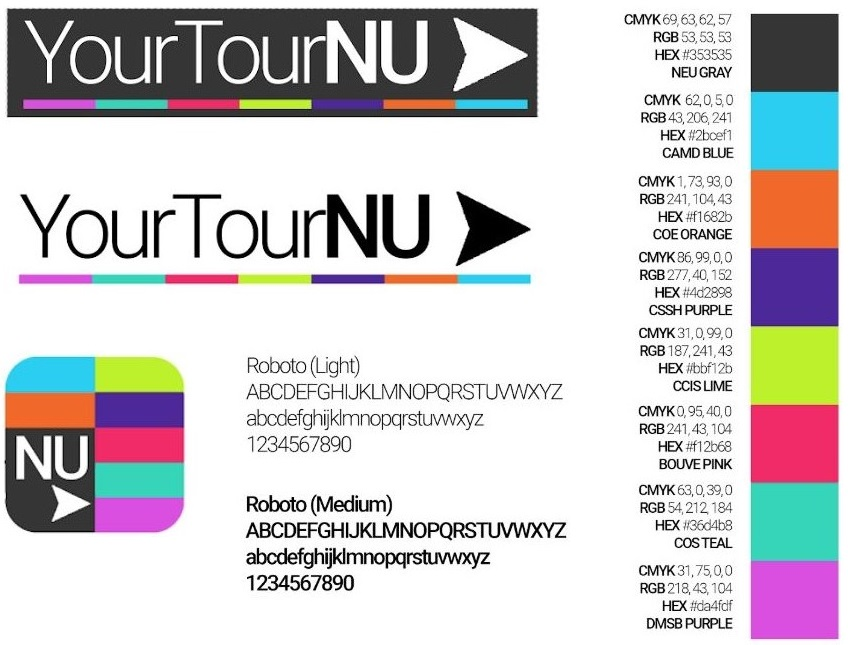

YourTourNU is a self-guided tour and wayfinding system for prospective students to explore Northeastern University's campus and student culture. The wayfinding system includes a mobile app and physical signage.
The Problem
Like many college campuses, Northeastern University is a large and complex environment.
Younger friends looking to apply to my university have reached out to me for tours. When I showed them around campus, I tailored the tour to their interests, took shortcuts, and provided insider information on student life. They were grateful for the experience, as I was their only connection to Northeastern.
I wondered: how might prospective students effectively explore the campus without any current student to act as their personal guide?
Team and Role
Erin Dooley and I designed YourTourNU as the capstone project of our Design Process, Context & Systems course, in which we were tasked with redesigning any wayfinding system. We conducted user research, created blueprints and a journey map, and designed user flows connecting our app and campus signage system. I led the design of the final mobile app prototypes (directional and orientational parts of our wayfinding system) while Erin led the design of the final physical signage prototypes (identificational).
Research
To gain a better understanding of our users’ perspective, we interviewed 10 prospective students around campus. We also interviewed 10 first year students on their perspectives of wayfinding on campus. From the collective inputs, we were able to identify pain points and ideal features that our final product should have.
Pain points:
- Complex, large environment
- Buildings are poorly labelled
- Some large buildings have different names based on entrance
- Pathways are organic, difficult to describe without visuals or checkpoints
- Don’t know which buildings are relevant to their field of study (or major)
- Appearing to be lost on campus is awkward and embarrassing
- Being part of a large tour group with visitor identification lanyards is also embarrassing
Goal: Create a wayfinding system (mobile app and physical signs) that gives visiting students the experience of a true Northeastern student, by recreating the daily routine of a student in their college of interest while giving them a better understanding of the unique qualities that NU offers.
Opportunities:
- Feel like a current student by touring independently
- Gain additional information on student life through the mobile app
- Receive personalized tour tailored to their academic interests
Ultimately, we discovered that two key components lacking from the current system were a sense of independence and a sense of personalization. From current students, we also discovered more problems with Northeastern’s current wayfinding system than we had initially realized. This directed us to design a self-guided and customizable tour solution as an app for prospective students, as well as public physical signage around campus.
Users and Audience
{kind=link}
Target users of YourTourNU are prospective Northeastern students looking for an immersive self-guided tour, with the goal of deciding whether NU is a good fit for them. They prefer to explore independently and may have a time constraint.
Journey Map and Blueprints
To personalize tours to specific areas of academic interest, we imagined the actual journeys of visiting prospective students for our own colleges. Through my own experience as a CCIS (College of Computer and Information Science) student and Erin’s experience as a COE (College of Engineering) student, we were able to model tours for these two colleges based on our own experiences.
  {kind=link}
{kind=link}
{kind=link}
Prototypes
YourTourNU App
- Adobe XD prototype
- Directional and orientational
{kind=link}
Campus Signage
Signs should assist campus visitors, by clearly marking buildings as well as the path that app users should take.
{kind=link}
Types of signs:
- Combination of directional and orientational
- Located at intermediate points along the path, indicate general direction to next stop
- Colour coded by college tour
- Back: full campus map - orientational
- QR code - take students right to the YourTourNU app
- Not extremely detailed - supplement to app, which uses geolocation to guide the student in real time
- Identificational
- Posted outside of buildings
- QR code
- Arrow pointing to the correct entrance - small directional component
- Smaller identificational signs - small coloured plaques
- Posted on building walls, directly next to door
Style Guide
{kind=link}
Reflection
This project involved designing both software and physical components of a system. YourTourNU demonstrates the power of technology as an augment to reality rather than a replacement or distraction. As a powerful tool for college admissions, the system has the opportunity to be implemented at other universities as well.
To design a full system, research on how to create comprehensive tours for each major/college is needed. This may involve interviewing current students based on major and other experts in tour-guiding. The level of user personalization depends on the amount of information able to be collected and organized from experts. This can be a follow-up UX project for the future.